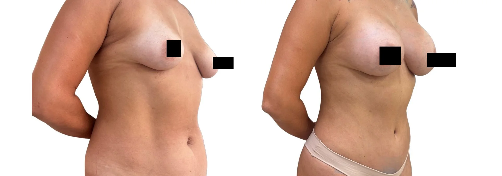

Gordura localizada
Lipoaspiração pode ser indicada quando há depósitos localizados e pele adequada.
Lipoaspiração, abdominoplastia e cirurgias para excesso de pele tratam componentes diferentes. A avaliação identifica o que realmente limita o contorno antes de discutir técnica, cicatriz, associações e recuperação.
Atendimento na Clínica LIV Faria Lima, em Pinheiros. Consulta presencial, teleconsulta em casos selecionados e preparo pré-operatório integrado quando indicado. A equipe informa agenda e próximos passos pelo WhatsApp.

O nome da cirurgia vem depois do diagnóstico. O primeiro passo é entender se o incômodo está principalmente na gordura, na pele, na parede abdominal ou em mais de uma região.
A consulta diferencia gordura localizada, excesso de pele, flacidez, diástase, cicatrizes e áreas prioritárias para evitar promessas de padronização.
Lipoaspiração pode ser indicada quando há depósitos localizados e pele adequada.
Abdominoplastia, braquioplastia e pós-bariátrica tratam flacidez e sobra cutânea.
Nem toda queixa de contorno exige a mesma técnica ou associação.
Quando o procedimento não é o melhor caminho, a consulta também serve para explicar alternativas, limites e o momento mais adequado para intervir.
O ponto decisivo é entender se a queixa vem de gordura localizada, flacidez, excesso de pele ou uma combinação.
Refina contorno quando há gordura localizada e pele com boa capacidade de retração.
Ver lipoaspiraçãoTrata excesso de pele, flacidez e, quando indicado, diástase abdominal.
Ver abdominoplastiaOrganiza por etapas o tratamento de excesso de pele após grande perda de peso.
Ver pós-bariátricaAs fotos ajudam a ilustrar planejamento e cicatrização, mas cada resultado depende de anatomia, técnica, recuperação e cuidados pós-operatórios.

Imagem educativa de contorno corporal. Resultado varia conforme anatomia e cicatrização.

Imagem autorizada com finalidade educativa, sem promessa de resultado.
Caso real autorizado, apresentado em conjunto e sem retoques de forma corporal. A paciente realizou cirurgia combinada de mama e abdome; o resultado não representa uma técnica isolada. Resultados variam conforme anatomia, indicação, cicatrização e cuidados pós-operatórios. Resultados insatisfatórios, intercorrências e complicações são possíveis; riscos específicos e eventual necessidade de revisão são discutidos na avaliação médica.

Na avaliação são discutidas áreas, extensão, associações possíveis, preparo clínico, cicatrizes e tempo de recuperação para um plano realista.
Entender incômodo, rotina, objetivos e expectativas.
Avaliar anatomia, pele, cicatrizes possíveis e proporções.
Discutir técnica, alternativas, limites e associações.
Orientar exames, preparo, recuperação e orçamento.
Cirurgiã plástica, CRM-SP 191605 e RQE 110472, com formação pela UNICAMP, a Dra. Amanda avalia anatomia, pele, tecidos, cicatrizes, recuperação e segurança clínica. O plano é construído para responder à queixa da paciente com proporção, naturalidade e limites claros.
As consultas acontecem na Clínica LIV Faria Lima, em Pinheiros, próxima à Estação Pinheiros do metrô e com estacionamento pago no local. A jornada pode integrar consulta, exames, preparo clínico e avaliação cardiológica pré-operatória quando indicada.
Quando indicada, a avaliação cardiológica pré-operatória pode ser organizada na própria Clínica LIV com o Dr. Daniel Added, cardiologista formado pela USP e médico do InCor, CRM-SP 199104. Isso facilita exames, análise de risco e comunicação entre os profissionais envolvidos.
Algumas queixas pedem associação ou uma estratégia diferente. A consulta ajuda a definir o melhor caminho.
Nos procedimentos cirúrgicos, o preparo inclui avaliação clínica, exames pré-operatórios e análise dos fatores de risco. Quando indicada, a avaliação cardiológica pré-operatória pode ser integrada à jornada na própria Clínica LIV com o Dr. Daniel Added, cardiologista formado pela USP e médico do InCor, CRM-SP 199104.
Não. Lipoaspiração é uma das possibilidades. Contorno corporal pode envolver lipo, abdominoplastia, braquioplastia ou cirurgias para excesso de pele.
A avaliação considera gordura localizada, elasticidade da pele, flacidez e cicatrizes possíveis. Essa diferença muda completamente a indicação.
Às vezes sim, mas a segurança define limites de tempo cirúrgico, extensão, exames e recuperação.
Não é o objetivo. O foco é remodelar proporções e tratar excessos específicos após avaliação individual.
Sim. Geralmente exige organização por etapas, avaliação nutricional, exames e definição de prioridades.
A equipe orienta formato de consulta, disponibilidade, nota fiscal e próximos passos. Não é necessário enviar fotos ou detalhes clínicos pelo site para começar.
A equipe entende sua queixa, sua prioridade e o procedimento de interesse.
Você recebe informações sobre consulta presencial, teleconsulta inicial em casos selecionados e agenda.
Na consulta, a Dra. Amanda avalia técnica, limites, segurança, recuperação e próximos passos.
Converse com a equipe para receber disponibilidade e orientação sobre o primeiro atendimento. A indicação cirúrgica só é definida após avaliação médica.